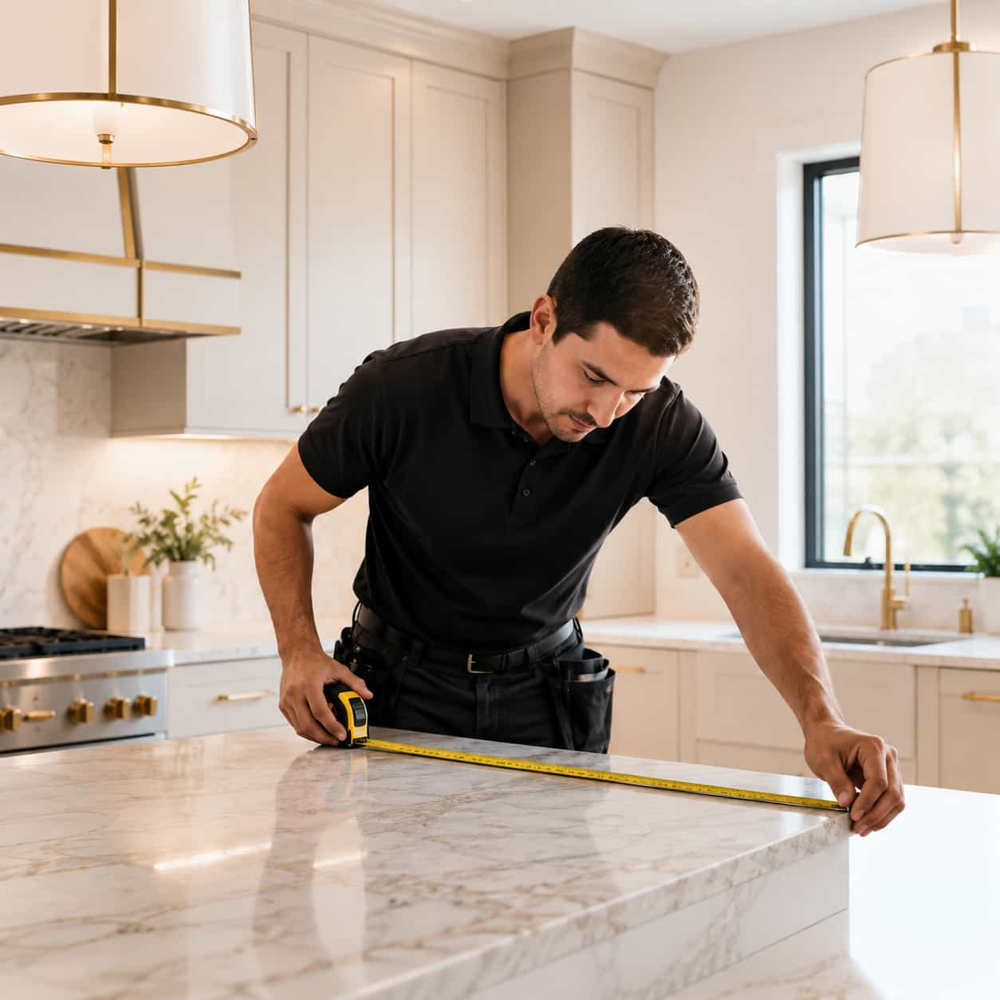
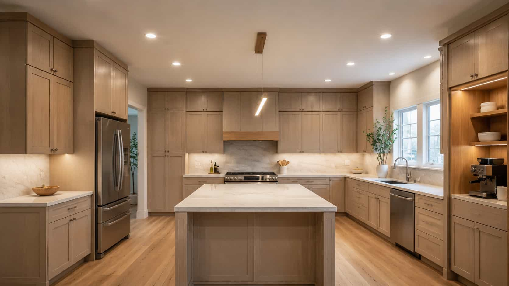

CABINET REPLACEMENT
Compare cabinet replacement provider paths with clearer project notes
Review cabinet replacement paths for modern storage, cleaner lines, darker finishes, soft-close details, brass hardware, and better kitchen organization.
CABINET REPLACEMENT
CasaKitch helps homeowners describe cabinet goals, preferred finishes, storage priorities, hardware direction, and compare local provider options for cabinet-focused updates.

CABINET REPLACEMENT
Review cabinet replacement paths for modern storage, cleaner lines, darker finishes, soft-close details, brass hardware, and better kitchen organization.
Start with your project goals, preferred materials, layout notes, and service direction. CasaKitch helps homeowners compare local provider options and review matching provider paths without acting as a contractor, installer, retailer, manufacturer, or remodeling company.
SERVICE REQUEST DETAILS
CasaKitch helps homeowners describe the tile direction, surface area, style preference, material ideas, and project notes before comparing local provider options.
Share wall area, tile size ideas, backsplash height, or layout questions.
Compare clean, warm, bold, textured, marble-look, or minimal tile paths.
Start with simple notes before reviewing matching provider options.
Include grout color, edge detail, trim ideas, and lighting around the tile.


